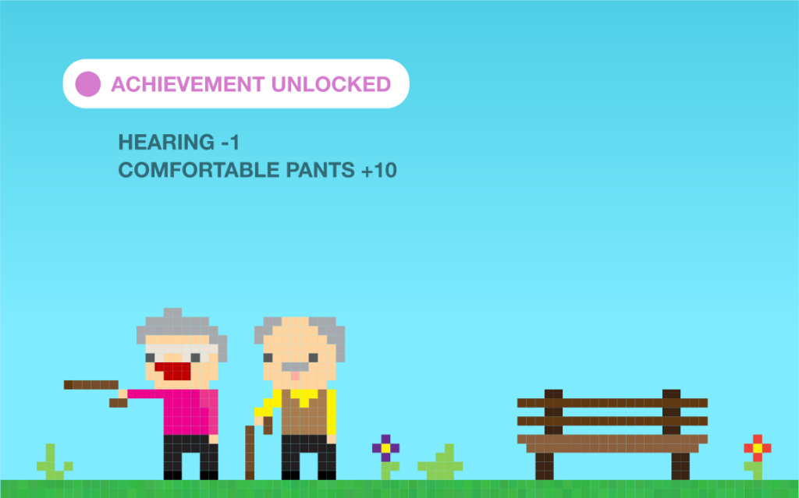

You might not realise, but real life is a game of strategy. There are some fun mini-games – like dancing, driving, running, and sex – but the key to winning is simply managing your resources. Most importantly, successful players put their time into the right things. Later in the game money comes into play, but your top priority should always be mastering where your time goes
Scroll
Life begins when you’re assigned a random character and circumstances:
The first 15 years or so of life are just tutorial missions, which suck. There’s no way to skip these
As a young player, you’ll have lots of time and energy, but almost no experience. You’ll find most things – like the best jobs, possessions and partners – are locked until you get some.
This is the time to level up your skills quickly. You will never have so much time and energy again.
Now that you’re playing properly, your top priority is to assign your time as well as possible. Every single thing you do affects your state and your skills:
This may sound simple, but the problem is you won’t always know what tasks to choose, and your body won’t always obey your commands. Let’s break it down.
Many players find that when they choose to do something – say “go to the gym” – their body ignores them completely.
This is not a bug. Everybody has a state, which you can’t see directly, but looks something like this:
If your state gets too low in one area, your body will disobey your own instructions until your needs are met. Try studying when you’re exhausted and hungry, and watch your concentration switch to Twitter.
Your willpower level is especially important. Willpower fades throughout the day, and is replenished slightly by eating, and completely by a good night’s sleep. When your willpower is low, you are only able to do things you really want to.
Every decision you have to make costs willpower, and decisions where you have to suppress an appealing option for a less appealing one (e.g. exercise instead of watch TV) require a lot of willpower.
There are various tricks to keep your behaviour in line:
1)Keep your state high. If you’re hungry, exhausted, or utterly deprived of fun, your willpower will collapse. Ensure you take consistently good care of yourself.
2)Don’t demand too much willpower from one day. Spread your most demanding tasks over multiple days, and mix them in with less demanding ones.
3)Attempt the most important tasks first. This makes other tasks more difficult, but makes your top task more likely.
4)Reduce the need to use willpower by reducing choices. If you’re trying to work on a computer that can access Facebook, you’ll need more willpower because you’re constantly choosing the hard task over the easy one. Eliminate such distractions.
Choosing the right tasks at the right time is most of the game.
Some tasks mostly affect your state, e.g.

You need to put time into things that ensure a healthy state – like food and sleep – to keep your willpower high. And then you need to develop your skills with what you have left.
Your environment has a constant impact on your stats, skills, and your chances of levelling up.
It’s possible to play the game well almost anywhere, but it’s a lot easier in certain places. If you’re female and in the wrong country, for example, you can’t unlock many achievements.
The odds of anyone being born in their optimal location are virtually zero, so research your options, and consider moving early. Location is a multiplier to all of your skills and states.
Attraction is a complex mini-game in itself, but mostly a byproduct of how you’re already playing. If you have excellent state and high skills, you’re far more attractive already. A tired, irritable, unskilled player is not appealing, and probably shouldn’t be looking for a relationship.
Early in the game it can be common to reject and be rejected by other players. This is normal, but unfortunately it can drain your state, as most players don’t handle rejection or rejecting well. You’ll need to expend willpower to keep going, and willpower is replenished by sleep, so give it time.
80% of finding someone comes down to being your most attractive self, which – like so much in life – just means putting your time in the right places. If you’re exercising, socialising, well nourished and growing in your career, you will radiate attraction automatically. The remaining 20% is simply putting yourself in places where you can meet the right people.
Later in the game you’ll have to manage a new resource called ‘money’. Most players will find money increases throughout the early game, but that this actually introduces more problems, not less.
The most important rule of money is never to borrow it, except for things that earn you more back. For example, education or a mortgage can be worthwhile (but are not necessarily so, depending on the education or the mortgage). Borrowing to buy new shoes is not.
Depending on your financial ambitions, here are a few strategies to bear in mind:
1)Not fussed about money
2)Well off
3)Mega rich
Your options change as the game progresses. Marriage and children will reduce your time and energy, and introduce more random elements into the game (“Emergency diaper change!”). This makes it harder to develop yourself as quickly.
Older characters usually have more skills, resources and experience, unlocking quests that were previously impossible, like “owning a house”, or “writing a (good) novel”.

All players die after about 29,000 days, or 80 years. If your stats and skills are good, you might last a little longer. There is no cheat code to extend this.
At the start of the game, you had no control over who you were or your environment. By the end of the game that becomes true again. Your past decisions drastically shape where you end up, and if you’re happy, healthy, fulfilled – or not – in your final days there’s far less you can do about it.
That’s why your strategy is important. Because by the time most of us have figured life out, we’ve used up too much of the best parts.